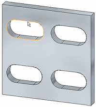
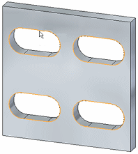

Offset Edge options
- Selection Type
-
Specifies the edge selection method.
- Chain
-
Automatically selects one continuous edge chain when you select an edge.

- Face
-
Automatically selects all internal edge chains on a face you select.

- Loop
-
Automatically selects all the edges of individual loops on a face when you select the face and then select a loop.
The Loop edge selection type is useful when an edge belongs to two faces, such as the edge of a face in a solid.
Note:Selecting a closed loop that is not tangentially connected limits the options available for the Offset Edge command as follows:
-
You cannot specify the direction for the offset edge imprint.
-
You cannot specify a double offset.
-